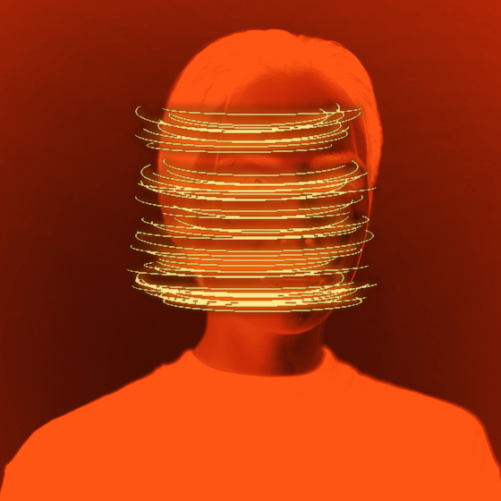
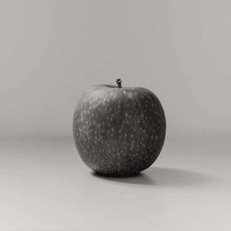
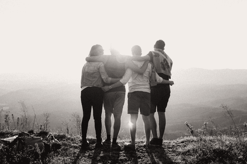
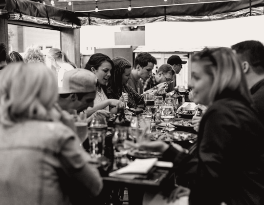
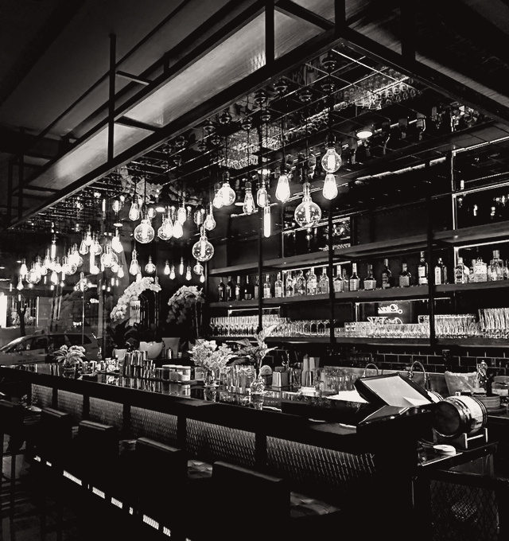
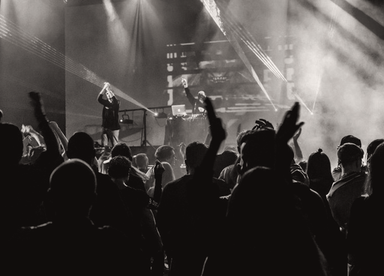
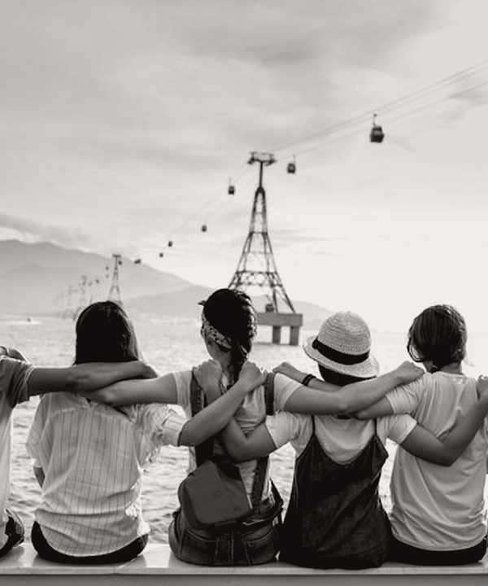

NUESTROS VALORES
EN FÀBRIKA, CREAMOS ESPACIOS DE CONVIVENCIA PARA ENCONTRARSE ALREDEDOR DE UNA CAÑA RECIÉN TIRADA, DE UN BRUNCH DE BRASA, DE UN APERITIVO AL SOL DEL POBLENOU, DE UNA CENA ENTRE AMIGOS, DE UNA NOCHE FESTIVA Y MUCHO MÁS : EL SER HUMANO ESTÁ HECHO PARA REUNIRSE, FÀBRIKA ESTÁ AQUÍ PARA DESTILAR EL LUGAR PERFECTO.

FÀBRIKA
?QUÉ
SOMOS ?
EL SER HUMANO NECESITA COMPARTIR, FÀBRIKA LE DA UNA DIRECCIÓN EN BARCELONA (Y UNA BARRA DE COBRE).




LA NAVE CREATIVA DEL POBLENOU
LA AVENTURA TOMA FORMA EN UN ANTIGUO TALLER TEXTIL DE ALMOGÀVERS : TRES FERMENTADORES DE SEGUNDA MANO, UNA COCINA DE LEÑA Y LA OBSESIÓN DE CREAR UN LUGAR DONDE LOS VECINOS DE BARCELONA SE SIENTAN COMO EN CASA.

EL LÚPULO EN EL CORAZÓN DE NUESTRA ACTIVIDAD
MÁS DE 20 RECETAS PROPIAS VEN LA LUZ EN LA CAPITAL CATALANA. NUESTROS EQUIPOS CRECEN, ABRIMOS LA BODEGA DE BARRICAS Y EL PATIO DE BRASA, MANTENIENDO SIEMPRE ESA PASIÓN COMÚN : HACER DE CADA TRAGO UN MOMENTO ÚNICO.

14 ANOS DE HISTORIA COLECTIVA · 85 APASIONADOS
DE LOS TANQUES DE COCCIÓN A LA BARRA, DE LAS BRASAS A LOS FESTIVALES, CADA ARTESANO ESCRIBE UNA PÁGINA DE NUESTRA HISTORIA. ¿QUÉ NOS UNE ? LAS GANAS DE IR MÁS LEJOS PARA HACER VIBRAR BARCELONA CADA NOCHE.
DIRECTO DEL TANQUE
TIRADA FRESCA SIN PASTEURIZAR · EL POBLENOU
ÚNETE A LA TEAM FÀBRIKA,
CANDIDATURA ESPONTÁNEA.
MAESTRO CERVECERO / TIRADOR DE BARRA / JEFE DE BRASA / COMERCIAL DE BARRILES / SUMILLER DE LÚPULO / JEFE DE COCINA
CONTÁCTANOS
Para todas tus solicitudes (excepto reservas de última hora)
Cervecería Fàbrika Poblenou recopila tus datos únicamente para gestionar tu consulta de evento o reserva en nuestros espacios de Barcelona, conforme al RGPD.